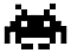

UTILITARIOS
Venha ver!
O principal objetivo deste repositório é fornecer um conjunto de ferramentas simples para gerar dados pessoais fictícios. Estas ferramentas podem ser utilizadas em projetos acadêmicos, trabalhos de curso, testes de
software, entre outros. Cada função foi desenvolvida para ser de fácil compreensão, facilitando a integração em diferentes projetos.

JOGO
Venha ver!
O principal objetivo deste repositório é fornecer uma base para a criação de um jogo parecido com "space invaders". Ele pode ser utilizado como objeto de estudos, ou como um
ponto de partida para criar seu próprio projeto. A estrutura do código é meio complexa por ser feito em java puro, mas para quem tem mais compreensão não será muito difícil.
UML
Venha ver!
O objetivo deste repositório é ajudar com vários projetos UML que possam ser usados. O inclui diagramas que ilustram diferentes aspectos da modelagem de software, como estrutura, comportamento e interação. Este repositório ajuda muito a
a criar diagramas UML ou para apenas para quem procura exemplo para consulta.